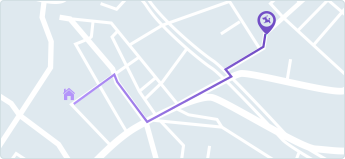

Detalles del paseo
Fecha: 21/03/2020
Hora: 1:00 p.m
Modalidad del paseo: Media Hora Grupal
Plan: Semanal
Pago:
Efectivo: $6.500
Sobre el paseador:
Ubicación del paseo:

Mascotas:

Tobías
Raza: Pastor Belga
Nº paseos realizados: 1

Lulú
Raza: Pastor Belga
Nº paseos realizados: 2